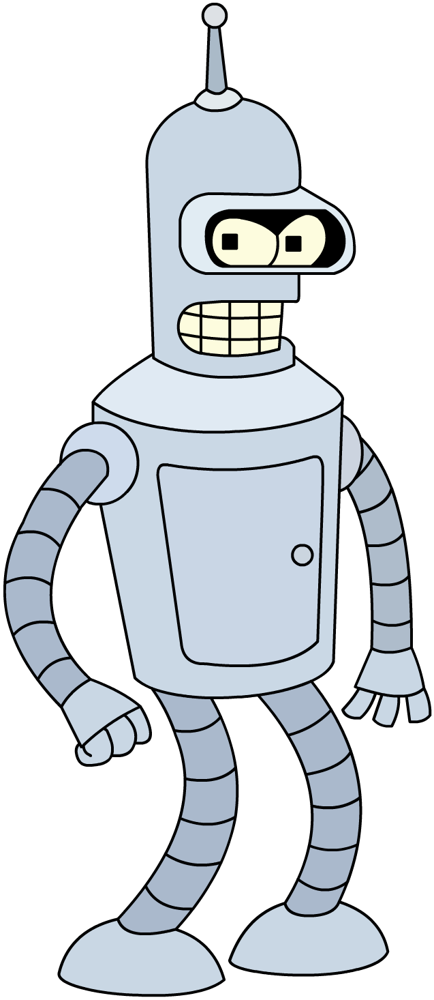

Кто и когда создал первого бота?
Что было дальше?

Алан Тьюринг – британский математик и основоположник информатики. Именно он создал в 1950 научный
труд «Вычислительные машины и интеллект», а позже и тест Тьюринга.
Данный тест заключался в том, чтобы проверить машину на человечность, узнать, может ли она мыслить как человек.
В тесте принимают участие трое: машина, человек и судья, которому по переписке нужно определить, кому какие реплики
относятся. Ко всеобщему удивлению, это было довольно сложно.
Позже, в 1966, Йозеф Вейценбаум создал виртуальный текстовый чат-бот. ELIZA (название устройства) могла
поддерживать разговор на определённую тему, и если диалог заходил в тупик, то сменяла тему.
Шизофренник Пэрри был разработан в 1972 году психиатром Кеннетом Колби. Профессор задавался вопросом: «может ли
машина понимать функции мозга?». Данный робот моделировал параноидного человека с шизофрений. Позже данная программа
стала «тренировочным полигоном» для студентов-медиков. По прохождению теста Тьюринга Пэрри смог обмануть около 50%
профессиональных психиатров, которые так и не поняли, что общаются с машиной.

В 1995 году была создана A.L.I.C.E. – первый проект, имитирующий голосовой чат с женщиной (современные
аналоги – Сири, Алиса, Маруся). Элис стала настоящим прорывом для индустрии – она могла обрабатывать естественную
речь, чтобы использовать технику сопоставления фразы пользователя с образцами в базе знаний.
SmarterChild – бот, созданный компанией ActiveBuddy в 2001 году. Программа была создана для естественного
общения с пользователями. Было доказано, что люди общаются с машинами просто из-за интереса.
Всемирно известная Siri тоже является ботом. Создана она была в 2010 году. Она стала первым ботом, который
был способен находить ответы на любые вопросы и взаимодействовать с сетью Интернет. Так же она обладала такими
полезными функциями, как: установка будильника или напоминания.
Через два года (в 2012) появился бот от компании Google – Google Now. С его помощью пользователь мог найти
ответы на любые интересующие его вопросы в Интернете.
В 2015 году были созданы малоизвестные помощники от компаний Amazon и Microsoft – Alexa и Cortana соответственно.
А в 2017 году появился первый русский аналог выше представленных моделей ботов – Алиса. Алиса создана компанией
Яндекс, она умеет выполнять все повседневные задачи: подскажет как добраться до того или иного места, куда можно сходить,
найдёт всю нужную информацию. Уникальность Алисы заключается в том, что она не ограничивается набором заранее заданных
ответов, а значит в её основе лежит постоянно обучаемая нейронная сеть.
В 2019 появилась Маруся, разработанная командой разработчиков VK. Данный бот включён в мессенджер, является «двойником»
Алисы, но имеет особенность: функция памяти. С её помощью бот способен запомнить какую-то нужную информацию; совмещает в
себе Siri и Алису.
Можно сказать, что боты и правда способны облегчить жизнь людям. Но не стоит забывать и о безопасности, ведь любая
система не застрахована от сбоев и хакерских атак.